Meu primeiro programa, um joguinho de labirinto para MS-DOS. Feito láááá por 1995, 1996.
Algum tempo depois de fuçar bastante no nosso primeiro computador em casa, passou a “fase Windows” e descobri algo mais interessante e desafiador para brincar: o MS-DOS. Era legal ir descobrindo as coisas apenas lendo as páginas de ajuda e vendo os arquivos .bat que vinham com os joguinhos. Sem o Google, sem um guru por perto.
Fui brincando e não sei porque um dia decidi tentar fazer um jogo de labirinto. Não sabia absolutamente nada de programação então comecei no Bloco de Notas (Notepad), fazendo vários desenhos em Ascii Art até chegar no que seria a estrutura da sala que o jogador veria, com paredes e portas. Tudo bem, tenho a sala, mas como fazer um jogo?
Após muita pesquisa e testes, conseguir fazer a movimentação, mudança de telas e até animação (!!?!) usando apenas 6 comandos básicos dos Batch File: call, cls, choice, echo, goto e pause.
Foram meses a fio usando o editor Edit do MS-DOS, desenhando cada tela com os caracteres ANSI (Alt+167, Alt+222, ...), amarrando o fluxo entre as salas para ficar certo e inventando personagens e dificuldades.
Casa sala tem várias “visões”, dependendo de qual porta você entra nela, e tive que desenhar cada uma delas. Tudo feito de maneira extremamente tosca, com todas as telas hardcoded. Eu nem tinha idéia do que eram funções ou algoritmos. Durante o desenvolvimento, descobri que o Edit palha só abria arquivos de no máximo 256 Kb, então tive que quebrar o jogo em vários arquivos...
O jogo se passa num castelo de um “Velho Sábio” (ou seria Sádico?) onde você foi aprisionado e deve resolver problemas, coletar itens e escapar de armadilhas mortais enquando tenta encontrar a saída, que está lá no 6º andar. E o jogo ainda possui animações na introdução, nas mortes, no encontro de personagens, entre-fases e no final, que é emocionante e sentimentalóide &;)
No fim das contas são “apenas” 749Kb de código! O jogo foi feito para funcionar no DOS 6.22 do Windows 3.11. No Windows 95 e posteriores, alguns caracteres podem aparecer trocados, mas até onde percebi isso não impede a jogabilidade. No Windows 2000 mala, o comando choice não é instalado normalmente mas está disponível no tal “Resource Kit”. Guardei uma cópia aqui (26 Kb).
DICA: Se ele apitar e parecer travado, aperte a exclamação (!) que continua.
1) A tela inicial
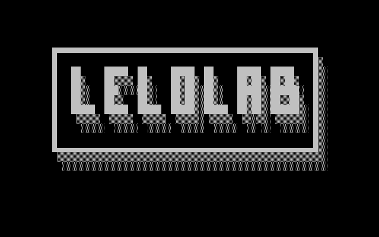
2) Uma tela da apresentação
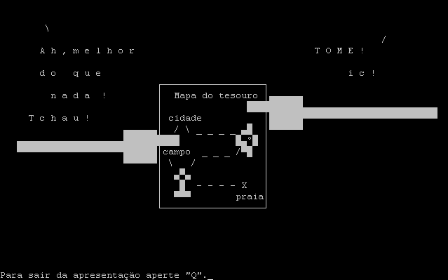
3) A visão das salas em 1ª pessoa
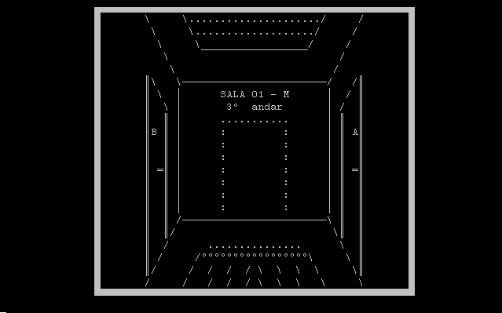
4) Os labirintos têm mapas
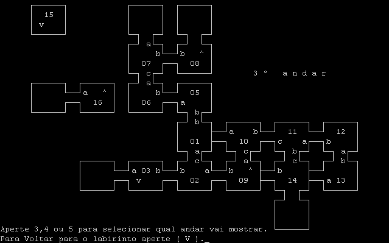
5) Temos um mocinho (você)
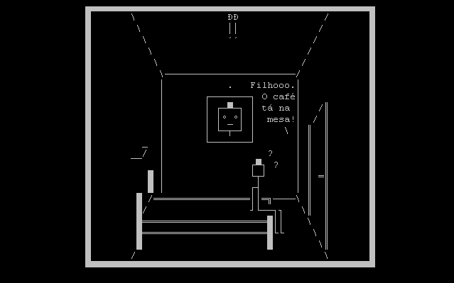
6) E é claro, temos um vilão
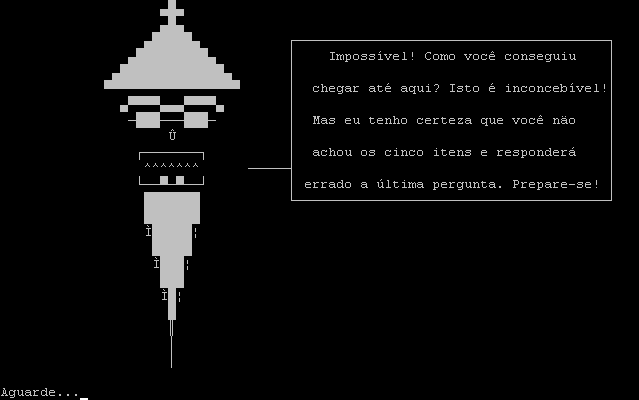
7) Temos também alguns personagens
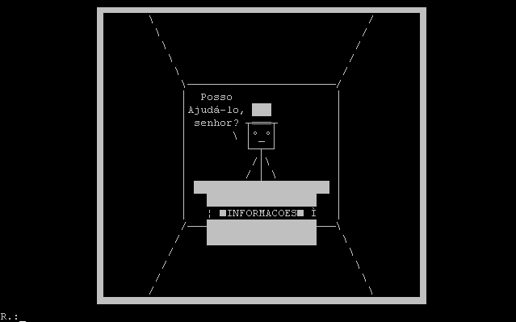
9) Coleta de itens e respostas
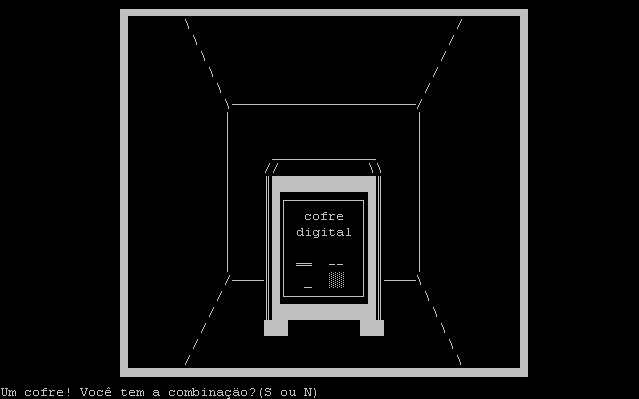
10) Situações inusitadas
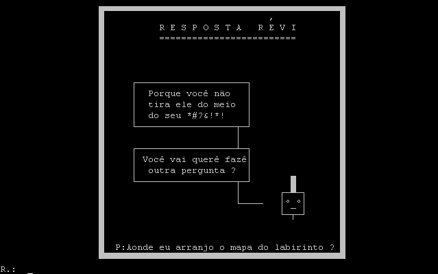
11) O jogo tem um final
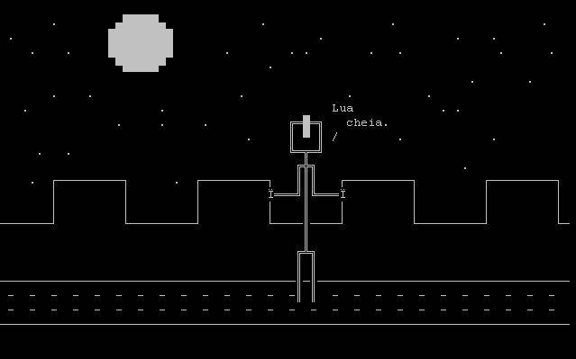
12) E você pode morrer no caminho...
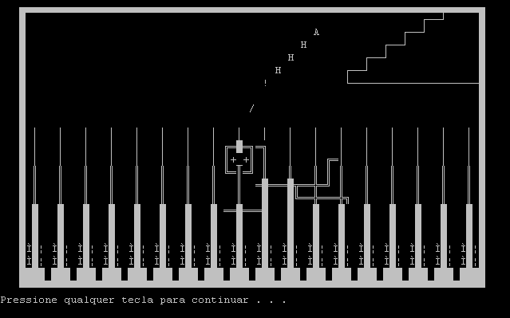